01 / Cinematic poster

GRAPHIC DESIGNER / VISUAL CREATIVE
I create cinematic visuals, bold identities and distinctive digital stories — designed to leave an impression.

01 / The selection
Sixteen selected visual pieces, including two upcoming concepts. Cinematic stories, typography, character art, and brand explorations.


02 / Brand identity
Identity systems with a strong centre of gravity — from the logo through to the world around it.
Gurzil Team is a modern creative brand inspired by streetwear, gaming culture and bold visual identity.
Explore case study ↗View artwork ↓


Independent identity
03 / Motion / Digital
A playable collection of animated visual studies. Press play and stay a while.
04 / The archive


05 / THE DESIGNER
INDEPENDENT / ART & VISUAL DESIGN
I'm MASSYNE. I turn ideas into expressive visuals that don't disappear into the scroll.
My work brings together cinematic poster composition, graphic design, visual identity and motion. I'm drawn to strong concepts, considered typography and bold artistic direction.
TOOLS & DISCIPLINES
06 / YOUR NEXT PROJECT
START SOMETHING ORIGINAL / 2026Let's build something bold together. A great idea deserves a visual identity that stands out.
START A CONVERSATION